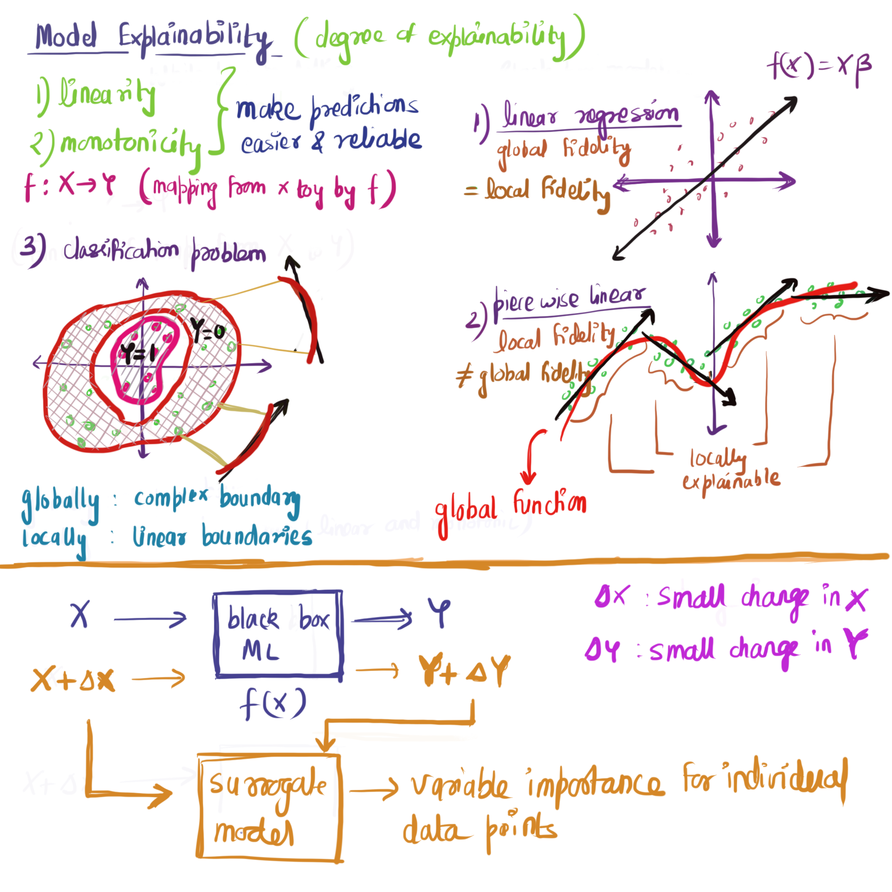

Giới thiệu
Khi xây dựng các mô hình học máy, ta sẽ phải đánh đổi giữa độ chính xác và độ phức tạp của mô hình. Mô hình có khả năng dự báo càng chính xác thì khả năng dự báo càng thấp với ngược lại. Ví dụ, các mô hình như OLS, logistics, decision tree có khả năng giải thích tốt nhưng khả năng dự báo lại hạn chế. Các mô hình có khả năng dự báo tốt nhất là các mô hình dạng black box như random forest, xgboost, neural network. Tuy nhiên, khi ứng dụng mô hình vào thực tế, đơn vị sử dụng (đơn vị kinh doanh) nhiều khi sẽ thiếu sự tin tưởng vào kết quả dự báo của mô hình do không biết cách thức mô hình dự báo trong từng trường hợp cụ thể.
Để khắc phục nhược điểm này, từ năm 2016 xuất hiện nhánh phân tích mới nghiên cứu việc giải thích các mô hình black box.
Khả năng giải thích toàn bộ và cục bộ
Với mô hình hồi quy tuyến tính, hệ số beta có thể được sử dụng để dự báo với tất cả các giá trị của x. Ví dụ, với mô hình \(y = 3x\) , \(\beta=3\) được sử dụng để dự báo với tất cả các quan sát. Mô hình có các tham số cố định và được sử dụng với toàn bộ dữ liệu được gọi là mô hình có khả năng giải thích toàn bộ (global fidelity).
Ngược lại với mô hình trên, các mô hình như random forest hay svm, không gian dùng để phân loại không có khả năng giải thích toàn bộ cao. Tuy nhiên, với mỗi quan sát, luôn tồn tại một mô hình đơn giản có khả năng giải thích (OLS, logistics) tốt. Các mô hình này chỉ có thể dự báo tại điểm đó hoặc 1 số điểm lân cận đủ gần mà không thể dùng để dự báo tại các điểm khác. Các mô hình loại này được gọi là mô hình chỉ có khả năng giải thích cục bộ (local fidelity).
Mô hình giải thích cục bộ
Mô hình thay thế cục bộ (surrogate model) là các mô hình đơn giản (logistic hoặc lm), có khả năng giải thích được tạo ra bằng các dữ liệu giả lập tại các quan sát cần giải thích. LIME - Local Interpretable Model-agnostic Explanations là một framework cho phép giải thích ảnh hưởng của từng biến lên dữ liệu kết quả dự báo.
Thuật toán LIME diễn ra theo các bước sau:
Với quan sát cần phân tích, tạo ra thêm các dữ liệu giả lập bằng cách thay đổi dữ liệu đầu vào một lượng \(\Delta x\) nhỏ
Tính toán khoảng cách từ quan sát gốc đến các quan sát mới được tạo ra.
Áp dụng mô hình đã xây dựng, dự báo với biến mới được tạo \(x'\)
Chọn ra m biến có mức độ quan trọng lớn nhất nhất đến mô hình
Xây dựng mô hình đơn giản (linear/logistics) với dữ liệu mới tạo với m biến đầu vào được chọn với trọng số bằng khoảng cách ở bước 2.
Sử dụng hệ số của mô hình mới tạo để giải thích hành vi của mô hình tại điểm cần phân tích

Thực hành
Bài toán hồi quy
Sử dụng lime để giải thích ảnh hưởng từng biến riêng biệt với mô hình xgboost
Xây dựng mô hình
:: p_load (tidyverse, mlbench, lime, h2o, tidymodels, ranger)data ("BostonHousing" )%>% head
crim zn indus chas nox rm age dis rad tax ptratio b lstat
1 0.00632 18 2.31 0 0.538 6.575 65.2 4.0900 1 296 15.3 396.90 4.98
2 0.02731 0 7.07 0 0.469 6.421 78.9 4.9671 2 242 17.8 396.90 9.14
3 0.02729 0 7.07 0 0.469 7.185 61.1 4.9671 2 242 17.8 392.83 4.03
4 0.03237 0 2.18 0 0.458 6.998 45.8 6.0622 3 222 18.7 394.63 2.94
5 0.06905 0 2.18 0 0.458 7.147 54.2 6.0622 3 222 18.7 396.90 5.33
6 0.02985 0 2.18 0 0.458 6.430 58.7 6.0622 3 222 18.7 394.12 5.21
medv
1 24.0
2 21.6
3 34.7
4 33.4
5 36.2
6 28.7
# Các biến mô hình <- setdiff (names (BostonHousing), "medv" )<- sample (1 : nrow (BostonHousing), 4 )# Train <- BostonHousing[- index, features]<- BostonHousing[- index, "medv" ]<- x_train %>% mutate (medv = y_train)# Test <- BostonHousing[index, features]<- BostonHousing[index, "medv" ]# Xây dựng mô hình <- rand_forest (trees = 500 , mtry = 5 ) %>% set_mode ("regression" ) %>% set_engine ("ranger" )<- model_rf %>% fit (medv ~ ., train)# Kết quả mô hình
parsnip model object
Ranger result
Call:
ranger::ranger(x = maybe_data_frame(x), y = y, mtry = min_cols(~5, x), num.trees = ~500, num.threads = 1, verbose = FALSE, seed = sample.int(10^5, 1))
Type: Regression
Number of trees: 500
Sample size: 502
Number of independent variables: 13
Mtry: 5
Target node size: 5
Variable importance mode: none
Splitrule: variance
OOB prediction error (MSE): 9.81515
R squared (OOB): 0.884458
Giải thích mô hình
library (lime)# Tạo object explainer <- lime (x = x_train, model = rf_fit)
$model
parsnip model object
Ranger result
Call:
ranger::ranger(x = maybe_data_frame(x), y = y, mtry = min_cols(~5, x), num.trees = ~500, num.threads = 1, verbose = FALSE, seed = sample.int(10^5, 1))
Type: Regression
Number of trees: 500
Sample size: 502
Number of independent variables: 13
Mtry: 5
Target node size: 5
Variable importance mode: none
Splitrule: variance
OOB prediction error (MSE): 9.81515
R squared (OOB): 0.884458
$preprocess
function (x)
x
<bytecode: 0x55e0cc4fb7a8>
<environment: 0x55e0cc4f3f50>
$bin_continuous
[1] TRUE
$n_bins
[1] 4
$quantile_bins
[1] TRUE
$use_density
[1] TRUE
$feature_type
crim zn indus chas nox rm age dis
"numeric" "numeric" "numeric" "factor" "numeric" "numeric" "numeric" "numeric"
rad tax ptratio b lstat
"numeric" "numeric" "numeric" "numeric" "numeric"
$bin_cuts
$bin_cuts$crim
0% 25% 50% 75% 100%
0.006320 0.081900 0.262660 3.689387 88.976200
$bin_cuts$zn
0% 75% 100%
0.0 12.5 100.0
$bin_cuts$indus
0% 25% 50% 75% 100%
0.46 5.19 9.69 18.10 27.74
$bin_cuts$chas
NULL
$bin_cuts$nox
0% 25% 50% 75% 100%
0.385 0.449 0.538 0.624 0.871
$bin_cuts$rm
0% 25% 50% 75% 100%
3.56100 5.88725 6.20850 6.62800 8.78000
$bin_cuts$age
0% 25% 50% 75% 100%
2.900 45.025 77.500 93.975 100.000
$bin_cuts$dis
0% 25% 50% 75% 100%
1.129600 2.091150 3.215700 5.188425 12.126500
$bin_cuts$rad
0% 25% 50% 75%
1 4 5 24
$bin_cuts$tax
0% 25% 50% 75% 100%
187 279 330 666 711
$bin_cuts$ptratio
0% 25% 50% 75% 100%
12.60 17.40 19.05 20.20 22.00
$bin_cuts$b
0% 25% 50% 75% 100%
0.32 375.24 391.34 396.21 396.90
$bin_cuts$lstat
0% 25% 50% 75% 100%
1.73 6.95 11.33 16.93 37.97
$feature_distribution
$feature_distribution$crim
1 2 3 4
0.250996 0.249004 0.249004 0.250996
$feature_distribution$zn
1 2
0.752988 0.247012
$feature_distribution$indus
1 2 3 4
0.2649402 0.2410359 0.3804781 0.1135458
$feature_distribution$chas
0 1
0.93027888 0.06972112
$feature_distribution$nox
1 2 3 4
0.2569721 0.2808765 0.2151394 0.2470120
$feature_distribution$rm
1 2 3 4
0.250996 0.249004 0.249004 0.250996
$feature_distribution$age
1 2 3 4
0.250996 0.249004 0.249004 0.250996
$feature_distribution$dis
1 2 3 4
0.250996 0.250996 0.247012 0.250996
$feature_distribution$rad
1 2 3
0.3804781 0.2270916 0.3924303
$feature_distribution$tax
1 2 3 4
0.252988048 0.252988048 0.484063745 0.009960159
$feature_distribution$ptratio
1 2 3 4
0.2848606 0.2151394 0.3884462 0.1115538
$feature_distribution$b
1 2 3 4
0.250996 0.250996 0.249004 0.249004
$feature_distribution$lstat
1 2 3 4
0.250996 0.249004 0.249004 0.250996
attr(,"class")
[1] "data_frame_explainer" "explainer" "list"
# Step 2: Biến đổi `explainer` giải thích cho tập test <- lime:: explain (x = x_test,explainer = explainer,n_permutations = 100 , # Số lượng dữ liệu giả lập feature_select = "auto" , # Lựa chọn feature n_features = 5 ) # Số lượng feature %>% # filter(case == 326) %>% # Tạo biến tổng trọng số mutate (predict_lime = feature_value * feature_weight) %>%
# A tibble: 6 × 12
model_type case model_r2 model_intercept model_prediction feature
<chr> <chr> <dbl> <dbl> <dbl> <chr>
1 regression 494 0.233 22.8 20.8 lstat
2 regression 494 0.233 22.8 20.8 rm
3 regression 494 0.233 22.8 20.8 zn
4 regression 494 0.233 22.8 20.8 nox
5 regression 494 0.233 22.8 20.8 tax
6 regression 496 0.291 26.4 19.6 lstat
# ℹ 6 more variables: feature_value <dbl>, feature_weight <dbl>,
# feature_desc <chr>, data <list>, prediction <dbl>, predict_lime <dbl>
# Step 3: Plot plot_features (explanation, ncol = 2 ) + labs (title = "Model xplaination" )
Sử dụng Lime với Regression H2O
library (h2o)h2o.init (max_mem_size = "1g" )
Connection successful!
R is connected to the H2O cluster:
H2O cluster uptime: 23 minutes 4 seconds
H2O cluster timezone: Etc/UTC
H2O data parsing timezone: UTC
H2O cluster version: 3.42.0.2
H2O cluster version age: 5 months and 4 days
H2O cluster name: H2O_started_from_R_jovyan_bvn076
H2O cluster total nodes: 1
H2O cluster total memory: 0.92 GB
H2O cluster total cores: 2
H2O cluster allowed cores: 2
H2O cluster healthy: TRUE
H2O Connection ip: localhost
H2O Connection port: 54321
H2O Connection proxy: NA
H2O Internal Security: FALSE
R Version: R version 4.3.0 (2023-04-21)
<- BostonHousing[- index,] %>% as.h2o
|
| | 0%
|
|======================================================================| 100%
<- BostonHousing[index,] %>% as.h2o
|
| | 0%
|
|======================================================================| 100%
# Build model <- h2o.automl (x = features,y = "medv" ,training_frame = h_train,nfolds = 5 ,max_runtime_secs = 60 ,max_models = 12 ,stopping_metric = "RMSE" ,seed = 1234 )
|
| | 0%
|
|= | 2%
|
|==== | 5%
|
|====== | 9%
|
|======== | 12%
|
|=========== | 15%
|
|============= | 19%
|
|================ | 22%
|
|================== | 26%
|
|==================== | 29%
|
|======================= | 33%
|
|========================= | 36%
|
|============================ | 40%
|
|======================================================================| 100%
# Lựa chọn mô hình tốt nhất @ leader
Model Details:
==============
H2ORegressionModel: gbm
Model ID: GBM_5_AutoML_7_20231230_71954
Model Summary:
number_of_trees number_of_internal_trees model_size_in_bytes min_depth
1 47 47 29872 6
max_depth mean_depth min_leaves max_leaves mean_leaves
1 6 6.00000 34 54 45.91489
H2ORegressionMetrics: gbm
** Reported on training data. **
MSE: 0.6222315
RMSE: 0.7888165
MAE: 0.6301973
RMSLE: 0.04228898
Mean Residual Deviance : 0.6222315
H2ORegressionMetrics: gbm
** Reported on cross-validation data. **
** 5-fold cross-validation on training data (Metrics computed for combined holdout predictions) **
MSE: 9.047387
RMSE: 3.007888
MAE: 2.060789
RMSLE: 0.132865
Mean Residual Deviance : 9.047387
Cross-Validation Metrics Summary:
mean sd cv_1_valid cv_2_valid cv_3_valid
mae 2.061555 0.196729 2.334831 1.810311 1.950298
mean_residual_deviance 9.070910 1.892329 10.879504 6.064637 9.795853
mse 9.070910 1.892329 10.879504 6.064637 9.795853
r2 0.890354 0.027750 0.882345 0.938077 0.880639
residual_deviance 9.070910 1.892329 10.879504 6.064637 9.795853
rmse 2.997275 0.330247 3.298409 2.462648 3.129833
rmsle 0.132011 0.014306 0.130868 0.110291 0.135983
cv_4_valid cv_5_valid
mae 2.124161 2.088174
mean_residual_deviance 10.137234 8.477319
mse 10.137234 8.477319
r2 0.865501 0.885205
residual_deviance 10.137234 8.477319
rmse 3.183902 2.911584
rmsle 0.150155 0.132756
# Step 1: Tạo explainer object <- lime (x = as.data.frame (h_train[, features]), model = model_automl@ leader)
$model
Model Details:
==============
H2ORegressionModel: gbm
Model ID: GBM_5_AutoML_7_20231230_71954
Model Summary:
number_of_trees number_of_internal_trees model_size_in_bytes min_depth
1 47 47 29872 6
max_depth mean_depth min_leaves max_leaves mean_leaves
1 6 6.00000 34 54 45.91489
H2ORegressionMetrics: gbm
** Reported on training data. **
MSE: 0.6222315
RMSE: 0.7888165
MAE: 0.6301973
RMSLE: 0.04228898
Mean Residual Deviance : 0.6222315
H2ORegressionMetrics: gbm
** Reported on cross-validation data. **
** 5-fold cross-validation on training data (Metrics computed for combined holdout predictions) **
MSE: 9.047387
RMSE: 3.007888
MAE: 2.060789
RMSLE: 0.132865
Mean Residual Deviance : 9.047387
Cross-Validation Metrics Summary:
mean sd cv_1_valid cv_2_valid cv_3_valid
mae 2.061555 0.196729 2.334831 1.810311 1.950298
mean_residual_deviance 9.070910 1.892329 10.879504 6.064637 9.795853
mse 9.070910 1.892329 10.879504 6.064637 9.795853
r2 0.890354 0.027750 0.882345 0.938077 0.880639
residual_deviance 9.070910 1.892329 10.879504 6.064637 9.795853
rmse 2.997275 0.330247 3.298409 2.462648 3.129833
rmsle 0.132011 0.014306 0.130868 0.110291 0.135983
cv_4_valid cv_5_valid
mae 2.124161 2.088174
mean_residual_deviance 10.137234 8.477319
mse 10.137234 8.477319
r2 0.865501 0.885205
residual_deviance 10.137234 8.477319
rmse 3.183902 2.911584
rmsle 0.150155 0.132756
$preprocess
function (x)
x
<bytecode: 0x55e0cc4fb7a8>
<environment: 0x55e0d47c1180>
$bin_continuous
[1] TRUE
$n_bins
[1] 4
$quantile_bins
[1] TRUE
$use_density
[1] TRUE
$feature_type
crim zn indus chas nox rm age dis
"numeric" "numeric" "numeric" "factor" "numeric" "numeric" "numeric" "numeric"
rad tax ptratio b lstat
"integer" "integer" "numeric" "numeric" "numeric"
$bin_cuts
$bin_cuts$crim
0% 25% 50% 75% 100%
0.006320 0.081900 0.262660 3.689387 88.976200
$bin_cuts$zn
0% 75% 100%
0.0 12.5 100.0
$bin_cuts$indus
0% 25% 50% 75% 100%
0.46 5.19 9.69 18.10 27.74
$bin_cuts$chas
NULL
$bin_cuts$nox
0% 25% 50% 75% 100%
0.385 0.449 0.538 0.624 0.871
$bin_cuts$rm
0% 25% 50% 75% 100%
3.56100 5.88725 6.20850 6.62800 8.78000
$bin_cuts$age
0% 25% 50% 75% 100%
2.900 45.025 77.500 93.975 100.000
$bin_cuts$dis
0% 25% 50% 75% 100%
1.129600 2.091150 3.215700 5.188425 12.126500
$bin_cuts$rad
0% 25% 50% 75%
1 4 5 24
$bin_cuts$tax
0% 25% 50% 75% 100%
187 279 330 666 711
$bin_cuts$ptratio
0% 25% 50% 75% 100%
12.60 17.40 19.05 20.20 22.00
$bin_cuts$b
0% 25% 50% 75% 100%
0.32 375.24 391.34 396.21 396.90
$bin_cuts$lstat
0% 25% 50% 75% 100%
1.73 6.95 11.33 16.93 37.97
$feature_distribution
$feature_distribution$crim
1 2 3 4
0.250996 0.249004 0.249004 0.250996
$feature_distribution$zn
1 2
0.752988 0.247012
$feature_distribution$indus
1 2 3 4
0.2649402 0.2410359 0.3804781 0.1135458
$feature_distribution$chas
0 1
0.93027888 0.06972112
$feature_distribution$nox
1 2 3 4
0.2569721 0.2808765 0.2151394 0.2470120
$feature_distribution$rm
1 2 3 4
0.250996 0.249004 0.249004 0.250996
$feature_distribution$age
1 2 3 4
0.250996 0.249004 0.249004 0.250996
$feature_distribution$dis
1 2 3 4
0.250996 0.250996 0.247012 0.250996
$feature_distribution$rad
1 2 3
0.3804781 0.2270916 0.3924303
$feature_distribution$tax
1 2 3 4
0.252988048 0.252988048 0.484063745 0.009960159
$feature_distribution$ptratio
1 2 3 4
0.2848606 0.2151394 0.3884462 0.1115538
$feature_distribution$b
1 2 3 4
0.250996 0.250996 0.249004 0.249004
$feature_distribution$lstat
1 2 3 4
0.250996 0.249004 0.249004 0.250996
attr(,"class")
[1] "data_frame_explainer" "explainer" "list"
# Step 2: Biến đổi `explainer` giải thích cho tập test <- lime:: explain (x = as.data.frame (h_test[, features]),explainer = explainer,n_permutations = 100 ,feature_select = "lasso_path" ,n_features = 5 ,labels = "Yes" )
|
| | 0%
|
|======================================================================| 100%
|
| | 0%
|
|======================================================================| 100%
# A tibble: 6 × 11
model_type case model_r2 model_intercept model_prediction feature
<chr> <chr> <dbl> <dbl> <dbl> <chr>
1 regression 1 0.241 28.0 15.0 indus
2 regression 1 0.241 28.0 15.0 nox
3 regression 1 0.241 28.0 15.0 rm
4 regression 1 0.241 28.0 15.0 dis
5 regression 1 0.241 28.0 15.0 lstat
6 regression 2 0.282 28.9 17.4 crim
# ℹ 5 more variables: feature_value <dbl>, feature_weight <dbl>,
# feature_desc <chr>, data <list>, prediction <dbl>
# Step 3: Plot plot_features (explaination, ncol = 2 ) + labs (title = "Model xplaination with H2O" )
Sử dụng Lime với bài toán phân loại
data ("credit_data" )set.seed (1 )names (credit_data) <- names (credit_data) %>% tolower<- initial_split (credit_data)<- training (split)<- testing (split)# Xây dựng mô hình xgboost đơn giản <- boost_tree (mode = "classification" , mtry = 4 ,trees = 100 ) %>% set_engine ("xgboost" ) %>% fit (status ~ ., train_df)<- predict (xgb_model, type = "prob" ) %>% mutate (truth = test_df %>% pull (status))roc_auc (result, truth, .pred_bad)
# A tibble: 1 × 3
.metric .estimator .estimate
<chr> <chr> <dbl>
1 roc_auc binary 0.805
Giải thích mô hình
#} fig-height: 8 <- lime (x = train_df %>% select (- status) %>% head, model = xgb_model)
$model
parsnip model object
##### xgb.Booster
raw: 256.8 Kb
call:
xgboost::xgb.train(params = list(eta = 0.3, max_depth = 6, gamma = 0,
colsample_bytree = 1, colsample_bynode = 0.153846153846154,
min_child_weight = 1, subsample = 1), data = x$data, nrounds = 100,
watchlist = x$watchlist, verbose = 0, nthread = 1, objective = "binary:logistic")
params (as set within xgb.train):
eta = "0.3", max_depth = "6", gamma = "0", colsample_bytree = "1", colsample_bynode = "0.153846153846154", min_child_weight = "1", subsample = "1", nthread = "1", objective = "binary:logistic", validate_parameters = "TRUE"
xgb.attributes:
niter
callbacks:
cb.evaluation.log()
# of features: 26
niter: 100
nfeatures : 26
evaluation_log:
iter training_logloss
1 0.5953775
2 0.5276102
---
99 0.1522388
100 0.1506859
$preprocess
function (x)
x
<bytecode: 0x55e0cc4fb7a8>
<environment: 0x55e0cb958698>
$bin_continuous
[1] TRUE
$n_bins
[1] 4
$quantile_bins
[1] TRUE
$use_density
[1] TRUE
$feature_type
seniority home time age marital records job expenses
"integer" "factor" "integer" "integer" "factor" "factor" "factor" "integer"
income assets debt amount price
"integer" "integer" "integer" "integer" "integer"
$bin_cuts
$bin_cuts$seniority
0% 25% 50% 75% 100%
0.00 1.25 6.00 13.75 20.00
$bin_cuts$home
NULL
$bin_cuts$time
0% 25% 50% 75%
12 27 48 60
$bin_cuts$age
0% 25% 50% 75% 100%
19.00 33.00 39.50 42.25 49.00
$bin_cuts$marital
NULL
$bin_cuts$records
NULL
$bin_cuts$job
NULL
$bin_cuts$expenses
0% 25% 50% 75% 100%
35.00 41.25 60.00 82.50 90.00
$bin_cuts$income
0% 25% 50% 75% 100%
50 65 130 179 230
$bin_cuts$assets
0% 50% 75% 100%
0 2000 7375 50000
$bin_cuts$debt
[1] 0 120 240 360 480
$bin_cuts$amount
0% 25% 50% 75% 100%
225 750 1000 1475 2350
$bin_cuts$price
0% 25% 50% 75% 100%
375.0 1418.0 1605.0 1856.5 2679.0
$feature_distribution
$feature_distribution$seniority
1 2 3 4
0.3333333 0.1666667 0.1666667 0.3333333
$feature_distribution$home
ignore other owner parents priv rent
0.0000000 0.1666667 0.3333333 0.3333333 0.0000000 0.1666667
$feature_distribution$time
1 2 3
0.3333333 0.1666667 0.5000000
$feature_distribution$age
1 2 3 4
0.3333333 0.1666667 0.1666667 0.3333333
$feature_distribution$marital
divorced married separated single widow
0.0000000 0.6666667 0.0000000 0.3333333 0.0000000
$feature_distribution$records
no yes
0.6666667 0.3333333
$feature_distribution$job
fixed freelance others partime
0.6666667 0.0000000 0.1666667 0.1666667
$feature_distribution$expenses
1 2 4
0.3333333 0.3333333 0.3333333
$feature_distribution$income
1 2 3 4
0.3333333 0.1666667 0.1666667 0.1666667
$feature_distribution$assets
1 2 3
0.5000000 0.1666667 0.3333333
$feature_distribution$debt
1 4
0.8333333 0.1666667
$feature_distribution$amount
1 2 3 4
0.3333333 0.1666667 0.1666667 0.3333333
$feature_distribution$price
1 2 3 4
0.3333333 0.1666667 0.1666667 0.3333333
attr(,"class")
[1] "data_frame_explainer" "explainer" "list"
# Giải thích mô hình <- lime:: explain (x = train_df %>% select (- status) %>% explainer = explainer,n_permutations = 100 , feature_select = "auto" ,n_features = 5 ,labels = "bad" )plot_features (explaination, cases = 1 : 4 )
Lưu ý
Việc sử dụng kỹ thuật giải thích mô hình có thể ảnh hưởng đến tốc độ của máy tính